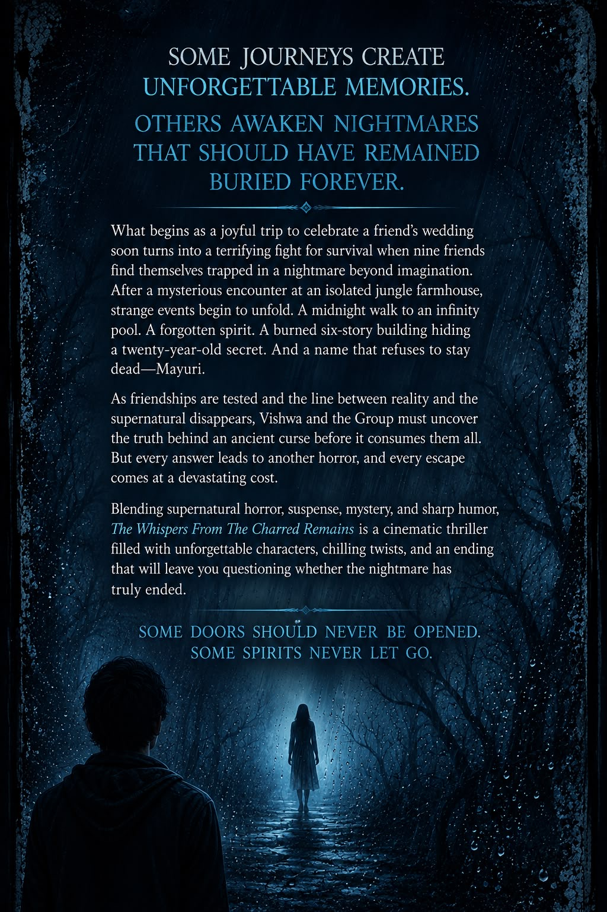

Book one
The Whispers from the Charred Remains
Horror Comedy
About the book
What begins as a joyful trip to celebrate a friend’s wedding soon turns into a terrifying fight for survival when nine friends find themselves trapped in a nightmare beyond imagination.
After a mysterious encounter at an isolated jungle farmhouse, strange events begin to unfold. A midnight walk to an infinity pool. A forgotten spirit. A burned six-story building hiding a twenty-year-old secret. And a name that refuses to stay dead—Mayuri.
As friendships are tested and the line between reality and the supernatural disappears, Vishwa and the Group must uncover the truth behind an ancient curse before it consumes them all. But every answer leads to another horror, and every escape comes at a devastating cost.
Blending supernatural horror, suspense, mystery, and sharp humor, The Whispers From The Charred Remains is a cinematic thriller filled with unforgettable characters, chilling twists, and an ending that will leave you questioning whether the nightmare has truly ended.
The edition
Cover artwork
Front and back cover of the first story.

Read the story
Chapters
Choose a chapter and continue through the complete nineteen-part story.